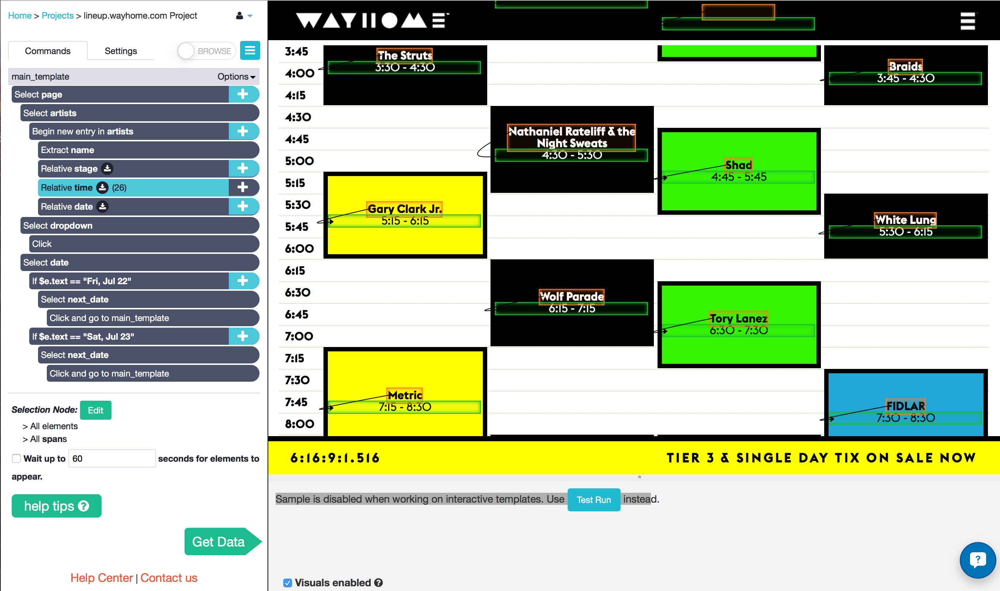

Here's a quick little story about an unconventional use for web scraping. When inspiration hits you, though, sometimes you've got to run with it, right?

It's seems to be a tradition among Torontonians to roast in the sun at an outdoor music festivals at some point during the summer - we're a little obsessed with them. You can't blame us though, there's no better way to celebrate the end of the 5 or 6 months when the city really does become the "Great White North". I wasn't planning on going to one this summer, but friends of mine managed to convince me to impulse-buy a ticket to WayHome Music Festival last weekend.

The Problem
The festival is only a few days away from today, and I was planning who I wanted to see. Understand that I am "that guy" in the group - the one that plans to run from stage to stage to see as much music as I possibly can, so it has to be planned out all ahead of time.
Now, I've got to hand it to WayHome, the online schedule looks awesome. But the problem is, I can't find a printable schedule anywhere. It seems to be the one thing they forgot to put online!
The Solution
Probably because of how much I'd been using ParseHub in the last few days, I began wondering if it was versatile enough to dates and times from the schedule, which seemed to have a ton of interactive elements. And that's when the crazy idea hit me: make my own printable schedules using the data online. I had no idea if I was going to be able to do it, but I wanted a break from work so I gave it a shot.
To my pleasant surprise, ParseHub was able to handle the interactive schedule really well! In fact, the project worked exactly how I wanted to, first try. I had the data in less than 5 minutes. You can take a look at my project below.

Now I just had to find a way to visualize it! I am by no means an experienced programmer, especially when it comes to creating graphics. But I did learn how to make bar graphs using Python for a few previous projects... and a schedule is sort of like a bar graph? You might disagree, but hey I told you this story was going to be be a little unconventional.

You can find the result in the three links below. Not too bad for an hours work, huh? They will certainly make group planning easier. Notice that AM and PM is flipped, as in 1 pm at the bottom of the schedule is "1" and 2 am at the top of the schedule is "14".
{kind=link}
{kind=link}
{kind=link}
If you are going to the festival yourself, feel free to download the schedules, give them to your friends, etc. Like I mentioned earlier, I used Python to create these schedules. Check out this tutorial on using ParseHub with Jupyter Notebook to get familiar. Here is every line of code that I used, separated into cells:
[1]
import pandas as pd
import pylab as pl
import numpy as np
import json
import re
[2]
# load ParseHub JSON
schedule = pd.read_json('Desktop/WAYHOME SCHEDULE', orient='columns')
# Expand into the appropriate columns
schedule = pd.read_json(schedule['artists'].to_json(), orient='index')`
# Add three new empty columns that will be filled later
times = pd.DataFrame(None, columns = ['start', 'end'], index = schedule.index)
schedule = schedule.join(times)`
# Sort the columns by index in case they got jumbled up for some reason
schedule = schedule.sort_index()
[3]
# This loop will fill the "start" and "end" columns for each act.
# Regular expressions will match with either 0, 15, 20, 30, or 45 minutes past the hour
# This will convert to a decimal of the hour (0, 0.25, 0.333, 0.5, 0.75) making plotting easier
for i in schedule.index:
# this will fill the "start" column with whatever time comes before the " - "
schedule.loc[i, 'start'] = ( re.search(r'(^[^ -]*)', schedule.loc[i, 'time']) ).group(1)
# the condition for this if statement will be met if there is a '15' after the colon in the start time
if ( re.search(r'([^:]*$)', schedule.loc[i, 'start']) ).group(1) == '15' :
# this will replace the string with a decimal representation of the hour
schedule.loc[i, 'start'] = int( re.search(r'(^[^:]*)', schedule.loc[i, 'start'] ).group(1) ) + 0.25
elif ( re.search(r'([^:]*$)', schedule.loc[i, 'start']) ).group(1) == '30' :
schedule.loc[i, 'start'] = int( re.search(r'(^[^:]*)', schedule.loc[i, 'start'] ).group(1) ) + 0.5
elif ( re.search(r'([^:]*$)', schedule.loc[i, 'start']) ).group(1) == '45' :
schedule.loc[i, 'start'] = int( re.search(r'(^[^:]*)', schedule.loc[i, 'start'] ).group(1) ) + 0.75
elif ( re.search(r'([^:]*$)', schedule.loc[i, 'start']) ).group(1) == '00' :
schedule.loc[i, 'start'] = int( re.search(r'(^[^:]*)', schedule.loc[i, 'start'] ).group(1) ) + 0
#this will fill the "end" column with whatever comes after the " - "
schedule.loc[i, 'end'] = ( re.search(r'([^- ]*$)', schedule.loc[i, 'time']) ).group(1)
if ( re.search(r'([^:]*$)', schedule.loc[i, 'end']) ).group(1) == '15' :
schedule.loc[i, 'end'] = int( re.search(r'(^[^:]*)', schedule.loc[i, 'end'] ).group(1) ) + 0.25
elif ( re.search(r'([^:]*$)', schedule.loc[i, 'end']) ).group(1) == '30' :
schedule.loc[i, 'end'] = int( re.search(r'(^[^:]*)', schedule.loc[i, 'end'] ).group(1) ) + 0.5
elif ( re.search(r'([^:]*$)', schedule.loc[i, 'end']) ).group(1) == '45' :
schedule.loc[i, 'end'] = int( re.search(r'(^[^:]*)', schedule.loc[i, 'end'] ).group(1) ) + 0.75
elif ( re.search(r'([^:]*$)', schedule.loc[i, 'end']) ).group(1) == '00' :
schedule.loc[i, 'end'] = int( re.search(r'(^[^:]*)', schedule.loc[i, 'end'] ).group(1) ) + 0
elif ( re.search(r'([^:]*$)', schedule.loc[i, 'end']) ).group(1) == '20' :
schedule.loc[i, 'end'] = int( re.search(r'(^[^:]*)', schedule.loc[i, 'end'] ).group(1) ) + 0.333
[4]
dates = ["Fri, Jul 22", "Sat, Jul 23", "Sun, Jul 24"]
stages = ["WayHome", "WayBright", "WayBold", "WayAway"]
# hard coded because apparently matlplotlib can't automatically wrap text in a text box!
schedule.loc[schedule['name'] == 'Nathaniel Rateliff & the Night Sweats', 'name'] = 'Nathaniel Rateliff & the Night\nSweats'
[5]
# this function will plot each stage's schedule
def barplot(stage) :
count = 0
# this will step through the stage's entire index
for i in stage.index :
count += 1
# start and end times
start = stage.loc[i, 'start']
end = stage.loc[i, 'end']
# these two conditions will handle the problem that there is no AM / PM distinction in time
# if the show starts before midnight but ends after midnight, adds 12 to the end time
if start > end:
end = end + 12
# The latest shows start at 1 am, and the earliest shows start at 1 pm.
# To distinguish them, the "count" variable will only equal 1 for the 1 pm shows,
# because of the order of the data extraction
# Therefore, if the start time is less than 2 and count is not 1, the time is 1 am = 13
if start < 2 and count != 1 :
start = start + 12
end = end + 12
# height of the bar that will be plotted
height = end - start
# text y location will be half way between start and finish
text_y = height/2 + start
# plot the bars
pl.bar(xlocation, height, bottom=start, color=color, edgecolor='black', linewidth = 3.0)
# artist name text
pl.text(xlocation+0.4, text_y, stage.loc[i, 'name'], ha='center')
# show time text will be located just below the artist name
pl.text(xlocation+0.4, text_y - 0.3, stage.loc[i, 'time'], ha='center')
[6]
%matplotlib inline
# will plot each of the days in a separate figure
for date in dates:
pl.figure(figsize=[15,22])
pl.xticks(np.arange(0,4) + 0.5, stages)
# first plot the horizontal lines as thin black boxes
height = 0.01
color = 'black'
width = 4
for j in range(2,14):
pl.bar(0, height, width, bottom=j, color=color, edgecolor='black')
color = "beige"
width = 0.8
# Next split the day's schedule into each stage and plot them in the correct x location
day_schedule = schedule[schedule["date"] == date]
wayhome = day_schedule[day_schedule['stage'] == 'WayHome']
xlocation = 0.1
barplot(wayhome)
waybright = day_schedule[day_schedule['stage'] == 'WayBright']
xlocation = 1.1
barplot(waybright)
waybold = day_schedule[day_schedule['stage'] == 'WayBold']
xlocation = 2.1
barplot(waybold)
wayaway = day_schedule[day_schedule['stage'] == 'WayAway']
xlocation = 3.1
barplot(wayaway)
pl.title(date, fontsize=24)
pl.ylim([1,14])
pl.show()